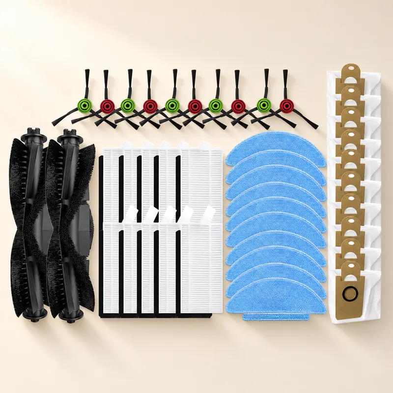

전용 세정제 · 공통 관리
물걸레 청소 특화 에브리봇 Q3 플러스 회전 걸레·더스트백 1년 세트 관리
글·구성: 제이상점 · 기종별 소모품 규격 요약본 (상세 사진과 관리 전문은 아래 네이버 블로그 모바일 원문에서 확인하실 수 있습니다.)

핵심 관리 · 선택 체크포인트
- 물걸레 밀착력과 정숙한 주행으로 거실 마루 청소에 자주 쓰이는 에브리봇 Q3 플러스는 원형 물걸레 패드의 청결도와 스테이션 더스트백 통기성이 청소 품질을 좌우합니다.
- 원형 극세사 물걸레 패드 교대 세탁과 V자 메인브러시 점검: 에브리봇 Q3 플러스의 도톰한 그레이 원형 물걸레 패드는 바닥 미세먼지를 닦아낸 뒤 세탁·통풍 건조해 교대로 부착해야 냄새 없이 뽀송하게 유지됩니다.
- 에브리봇 Q3 플러스 1년 세트 핵심 소모품 점검표: 브러시·걸레·필터·더스트백 5종을 주기에 맞춰 교대 관리하는 기준입니다.
- 상세페이지에서 에브리봇 Q3 플러스 전용 1년 소모품 구성을 확인해 보세요.
- 거실 소파 옆 트레이 사전 점검과 베란다 건조 랙 통풍 관리: 거실 트레이에 새 원형 걸레 4장과 화이트 프레임 필터, 더스트백을 나란히 꺼내 마모도를 비교하고 세척한 부품은 건조 랙에서 바짝 말려 주세요.
부품 규격 · 점검 기준표
| 부품 구분 | 에브리봇 Q3 플러스 규격 | 점검 및 교체 포인트 |
|---|---|---|
| 원형 회전 물걸레 패드 | 그레이 극세사 원형 패드 쌍 | 세척 후 통풍 건조하며 마른 예비 패드와 2매 동시 교대 |
| 오렌지·블랙 V자 메인·3암 브러시 | 솔·고무 V자 롤러 + 화이트 3암 사이드브러시 | 양끝 회전축 먼지 제거 및 브러시 가닥 탄성 확인 |
| 화이트 프레임 필터·더스트백 | 직사각 헤파필터 + 화이트 칼라 더스트백 | 필터 24시간 그늘 건조 교대 및 더스트백 여유 교체 |
자주 묻는 질문 (FAQ)
Q. 에브리봇Q3플러스의 원형 회전 물걸레 패드 규격과 관리 기준은 무엇인가요?
A. 그레이 극세사 원형 패드 쌍 규격을 사용하며, 세척 후 통풍 건조하며 마른 예비 패드와 2매 동시 교대 기준으로 점검·교체하면 청소 효율을 안정적으로 유지할 수 있습니다.
Q. 에브리봇Q3플러스의 오렌지·블랙 V자 메인·3암 브러시 규격과 관리 기준은 무엇인가요?
A. 솔·고무 V자 롤러 + 화이트 3암 사이드브러시 규격을 사용하며, 양끝 회전축 먼지 제거 및 브러시 가닥 탄성 확인 기준으로 점검·교체하면 청소 효율을 안정적으로 유지할 수 있습니다.
Q. 에브리봇Q3플러스의 화이트 프레임 필터·더스트백 규격과 관리 기준은 무엇인가요?
A. 직사각 헤파필터 + 화이트 칼라 더스트백 규격을 사용하며, 필터 24시간 그늘 건조 교대 및 더스트백 여유 교체 기준으로 점검·교체하면 청소 효율을 안정적으로 유지할 수 있습니다.